New Market Tax Credit Genetic Twins for Metropolitan US Cities
09 February, 2021
# need this installed to use
# genetic matching option in MatchIt
# install.packages("rgenoud")
# load package
library( MatchIt )
library( here )
library( dplyr )
library( geojsonio )
library( sp )
library( pander )
library(here)This code walks through how to make genetic twins for treated census tracts that received New Market Tax Credits (NMTC) between 2010-2017, utilizing dorling shape files that were created for this project and can be found here: https://github.com/DS4PS/usa-dorling-shapefiles/tree/master/maps/metros-dorling
Cases are matched to identify twin untreated tracts in 2010 utilizing the census variables that measure:
- Household Income
Percent of Persons with a College Degree
Percent of Persons who are White
We have created a data frame that combines census data and NMTC data, assigning the treatment variable to the NMTC tracts, and control to those that have not received funding under this program.
STEP 01
Load a catalog of URLs of dorling cartograms for each CBSA metro area in the US.
load_crosswalk <- function( )
{
dorlings.url <- "https://raw.githubusercontent.com/meliapetersen/matching-project/master/data/cbsa-names-and-shapefiles.csv"
dorlings.catalog <- read.csv( dorlings.url )
return( dorlings.catalog )
}dorlings.catalog <- load_crosswalk()
rmarkdown::paged_table( head( dorlings.catalog ) )Load a dorling cartogram for one metro area:
get_dorling <- function( cbsa, dorlings.catalog=NULL, mapit=FALSE )
{
if( is.null(dorlings.catalog) ){ dorlings.catalog <- load_crosswalk() }
file.name <- dorlings.catalog$shapefile[ dorlings.catalog$cbsa == cbsa ]
base.url <- "https://raw.githubusercontent.com/DS4PS/usa-dorling-shapefiles/master/maps/metros-dorling/"
full.url <- paste0( base.url, file.name )
map <- geojsonio::geojson_read( x=full.url, what="sp" )
if( mapit ){ plot( map ) }
return( map )
}Test the function with New Orleans data:
new.orleans.cbsa.code <- 35380
new.orleans <- get_dorling( cbsa=new.orleans.cbsa.code )STEP 02
Load the New Market Tax Credit treatment data:
df.treatment <- read.csv(here("data/data-rodeo/rodeod-treatment-data.csv"))
rmarkdown::paged_table( head(df.treatment) )Add the treatment data to the dorling spatial object:
add_treatment <- function( df.treatment, dorling.object )
{
# merge leftjoin dorling object and treatment data
dorling.object <- merge( dorling.object, df.treatment, by.x="GEOID", by.y="id2", all.x=TRUE )
# create treatment variable
treatment <- dorling.object$treatment
# omit NAs
treatment[ is.na(treatment) ] <- 0
#add treatment variable back into df
dorling.object$treatment <- treatment
return( dorling.object )
}Test the function:
new.orleans <- add_treatment( df.treatment, dorling.object=new.orleans )
# unit test - make sure data merge worked
table( new.orleans$treatment, useNA="ifany" )##
## 0 1
## 334 55# appended data
rmarkdown::paged_table( head(new.orleans@data) )STEP 03
Match the “treated” census tracts (those that received federal aid) with equivalent untreated tracts using the matchit package.
match_tracts <- function( fo, dorling.object )
{
# extract data frame from sp object
# rename rows using tract IDs
df <- as.data.frame( dorling.object )
row.names(df) <- df$GEOID
# convert string to formula object
fo <- as.formula( fo )
matchit.object <- NULL
# find matches in dataframe based on Household income, college education, and whiteness
try(
invisible({ capture.output({
matchit.object <- matchit( fo,
method="genetic", discard="both", reestimate=TRUE,
replace=FALSE, caliper=.25, data = df )
}) }),
silent=TRUE )
return( matchit.object )
}Test the function:
# define the matching function formula
fo <- as.formula( " treatment ~ hinc12 + pcol12 + pnhwht12" )
new.orleans.matches <-
match_tracts( fo, new.orleans )
summary( new.orleans.matches )##
## Call:
## matchit(formula = fo, data = df, method = "genetic", discard = "both",
## reestimate = TRUE, replace = FALSE, caliper = 0.25)
##
## Summary of balance for all data:
## Means Treated Means Control SD Control Mean Diff eQQ Med
## distance 0.2417 0.1353 0.1140 0.1064 0.1123
## hinc12 34491.3818 48927.1639 22198.4216 -14435.7821 13772.0000
## pcol12 26.1727 26.3045 19.2408 -0.1318 2.0800
## pnhwht12 34.4418 51.0782 32.3870 -16.6364 17.5900
## eQQ Mean eQQ Max
## distance 0.1094 0.1686
## hinc12 14702.6909 61682.0000
## pcol12 2.4713 7.9500
## pnhwht12 16.5593 33.2200
##
##
## Summary of balance for matched data:
## Means Treated Means Control SD Control Mean Diff eQQ Med eQQ Mean
## distance 0.2063 0.2071 0.0905 -0.0007 0.0082 0.0079
## hinc12 33019.6364 32850.3333 13025.5700 169.3030 919.0000 1099.7273
## pcol12 18.7864 18.9052 15.9278 -0.1188 0.4800 0.9612
## pnhwht12 30.0082 29.6918 29.0153 0.3164 1.3700 1.9885
## eQQ Max
## distance 2.22e-02
## hinc12 2.96e+03
## pcol12 3.49e+00
## pnhwht12 5.68e+00
##
## Percent Balance Improvement:
## Mean Diff. eQQ Med eQQ Mean eQQ Max
## distance 99.2981 92.7034 92.8104 86.8078
## hinc12 98.8272 93.3270 92.5202 95.2012
## pcol12 9.8485 76.9231 61.1046 56.1006
## pnhwht12 98.0984 92.2115 87.9917 82.9019
##
## Sample sizes:
## Control Treated
## All 334 55
## Matched 33 33
## Unmatched 212 22
## Discarded 89 0STEP 04
Assign tracts to groups to treated or untreated tracts by matched or unmatched tracts.
Treated or untreated tracts by Matched or unmatched tracts
assign_groups <- function( matchit.object, dorling.object )
{
if( is.null( matchit.object ) )
{
status <- rep( "control.unmatched", nrow( dorling.object ) )
status[ dorling.object$treatment == 1 ] <- "treatment.unmatched"
dorling.object$status <- status
}
if( ! is.null( matchit.object ) )
{
# extract matched pairs from matchit object
# match matrix is the length of the original treated groups
# IDs are rows of the original dataset
matches <- data.frame( treatment.group.id=row.names( matchit.object$match.matrix),
control.group.id=matchit.object$match.matrix )
these.na <- is.na( matches$control.group.id )
# generate four cases for tracts
id.all.treated <- matches$treatment.group.id
id.treated.matched <- matches$treatment.group.id[ ! these.na ]
id.treated.unmatched <- matches$treatment.group.id[ these.na ]
id.control.matched <- na.omit(matches$control.group.id)
id.control.unmatched <- dorling.object$GEOID [ !( dorling.object$GEOID %in% id.all.treated |
dorling.object$GEOID %in% id.control.matched ) ]
### Assign tract IDs to groups
treated.matched <- na.omit(id.treated.matched) %>% as.numeric
control.matched <- na.omit(id.control.matched) %>% as.numeric
treated.unmatched <- na.omit(id.treated.unmatched) %>% as.numeric
control.unmatched <- na.omit(id.control.unmatched) %>% as.numeric
status <- rep( "control.unmatched", nrow( dorling.object ) )
status[ dorling.object$GEOID %in% control.matched ] <- "control.matched"
status[ dorling.object$GEOID %in% treated.matched ] <- "treatment.matched"
status[ dorling.object$GEOID %in% treated.unmatched ] <- "treatment.unmatched"
dorling.object$status <- status
}
return( dorling.object )
}new.orleans <-
assign_groups( matchit.object=new.orleans.matches,
dorling.object=new.orleans )
table( new.orleans$status )##
## control.matched control.unmatched treatment.matched treatment.unmatched
## 33 301 33 22STEP 05 - Map Matches
Map the matched data based on coloring dependent on groups: Blue - Control group matched Red - Treated group matched Dark Red - Treated group unmatched Grey - Control group unmatched
If there is no counterfactual found, the map will produce a “No Valid Counterfactual Found.”
map_matches <- function( dorling.object, cbsa.name, zoom=TRUE, zoom.range=90 )
{
if( sum( dorling.object$status == "treatment.matched" ) > 0 )
{
### Create color vectors based on matches
color.vector <- rep( "gray80", nrow( dorling.object ) )
color.vector[ dorling.object$status == "control.matched" ] <- "blue"
color.vector[ dorling.object$status == "treatment.matched" ] <- "darkred"
color.vector[ dorling.object$status == "treatment.unmatched" ] <- adjustcolor( "darkred", alpha.f = 0.4 )
border.color <- rep( "gray40", nrow(dorling.object) )
border.color[ dorling.object$status == "treatment.unmatched" ] <- "darkred"
# set zoom
coords <- coordinates( dorling.object ) %>% as.data.frame()
x.min.max <- range( coords$V1, na.rm=T )
y.min.max <- range( coords$V2, na.rm=T )
if( zoom )
{
tail <- ( 100 - zoom.range ) / 200
x.min.max <- quantile( coords$V1, c( 0+tail, 1-tail ) )
y.min.max <- quantile( coords$V2, c( 0+tail, 1-tail ) )
}
par( mar=c(0,0,5,0) )
plot( dorling.object,
col=color.vector,
border=border.color,
xlim=x.min.max,
ylim=y.min.max,
main=toupper(cbsa.name),
cex.main=1.5 )
}
if( sum(dorling.object$treatment, na.rm = TRUE) < 1)
{
cat( "<br><br><hr><br><br>" )
cat( paste0( "<center><h2>","There are no treated tracts in ", toupper(cbsa.name), ".</h2></center>") )
cat( "<br><br><hr><br><br>" )
return( NULL )
}
if( sum( dorling.object$status == "treatment.matched" ) == 0 )
{
par( mar=c(0,0,5,0) )
plot( dorling.object,
col=ifelse( dorling.object$treatment == 1, "darkred", "gray80" ),
main=paste0( toupper(cbsa.name), ": \nNO VALID COUNTERFACTUALS FOUND" ),
cex.main=1.5 )
}
}map_matches( new.orleans, cbsa.name="New Orleans", zoom=TRUE, zoom.range=90 )Combine Steps
After completing the steps to creating the functions that will find matched twins for the treated groups, you will combine all steps to prepare to loop for all metro CBSAs.
get_matches <- function( cbsa.code, cbsa.catalog,
df.treatment, fo,
zoom.range=90, return.dorling=FALSE )
{
cbsa.name <- cbsa.catalog$cbsaname[ cbsa.catalog$cbsa == cbsa.code ]
dorling.object <- get_dorling( cbsa=cbsa.code, cbsa.catalog )
dorling.object <- add_treatment( df.treatment, dorling.object )
matched.tracts <- match_tracts( fo=fo, dorling.object )
cat( "<br><br><hr><br><br>" )
cat( paste0( "<center><h2>", toupper(cbsa.name), "</h2></center>") )
if( ! is.null(matched.tracts) )
{
cat( matched.tracts$nn %>% pander() )
}
dorling.object <- assign_groups( matched.tracts, dorling.object )
map_matches( dorling.object, cbsa.name, zoom=TRUE, zoom.range )
if( return.dorling ){ return( dorling.object ) }
}fo <- as.formula( "treatment ~ hinc12 + pcol12 + pnhwht12" )
akron <-
get_matches( cbsa.code=10420,
cbsa.catalog=dorlings.catalog,
df.treatment=df.treatment,
fo=fo,
return.dorling=TRUE )
table( akron$status, useNA="ifany" )
map_matches( akron, cbsa.name="AKRON, OH", zoom=FALSE )Create loop for all CBSAs
Note: Multiple cities could not find counterfactuals because of the number of census variables used. Though these are metropolitan cities, their demographics may not be as diverse as larger metropolitan cities and may not find viable matches. To find matches for all cities, use fewer census variables.
# dorlings.catalog <- load_crosswalk()
# df.treatment <- # load treatment data
# matching formula
# fo <- as.formula( "treatment ~ hinc12 + pcol12 + pnhwht12" )
# cbsa.code.list <- unique( dorlings.catalog$cbsa )
#
# for( i in cbsa.code.list )
# {
# get_matches( cbsa.code=i,
# cbsa.catalog=dorlings.catalog,
# df.treatment=df.treatment,
# fo=fo )
# }fo <- as.formula( "treatment ~ hinc12 + pcol12 + pnhwht12" )
cbsa.code.list <- unique( dorlings.catalog$cbsa )
for( i in cbsa.code.list [1:191] )
{
get_matches( cbsa.code=i,
cbsa.catalog=dorlings.catalog,
df.treatment=df.treatment,
fo=fo )
}## <br><br><hr><br><br><center><h2>ABILENE, TX</h2></center>## <br><br><hr><br><br><center><h2>AKRON, OH</h2></center>
## -----------------------------------
## Control Treated
## --------------- --------- ---------
## **All** 162 8
##
## **Matched** 4 4
##
## **Unmatched** 56 4
##
## **Discarded** 102 0
## -----------------------------------## <br><br><hr><br><br><center><h2>ALBANY, GA</h2></center><br><br><hr><br><br><center><h2>There are no treated tracts in ALBANY, GA.</h2></center><br><br><hr><br><br><br><br><hr><br><br><center><h2>ALBANY-SCHENECTADY-TROY, NY</h2></center>## <br><br><hr><br><br><center><h2>ALBUQUERQUE, NM</h2></center>## <br><br><hr><br><br><center><h2>ALEXANDRIA, LA</h2></center>## <br><br><hr><br><br><center><h2>ALLENTOWN-BETHLEHEM-EASTON, PA-NJ</h2></center>## <br><br><hr><br><br><center><h2>ALTOONA, PA</h2></center><br><br><hr><br><br><center><h2>There are no treated tracts in ALTOONA, PA.</h2></center><br><br><hr><br><br><br><br><hr><br><br><center><h2>AMARILLO, TX</h2></center><br><br><hr><br><br><center><h2>There are no treated tracts in AMARILLO, TX.</h2></center><br><br><hr><br><br><br><br><hr><br><br><center><h2>AMES, IA</h2></center>## <br><br><hr><br><br><center><h2>ANCHORAGE, AK</h2></center>## <br><br><hr><br><br><center><h2>ANDERSON, IN</h2></center><br><br><hr><br><br><center><h2>There are no treated tracts in ANDERSON, IN.</h2></center><br><br><hr><br><br><br><br><hr><br><br><center><h2>ANDERSON, SC</h2></center><br><br><hr><br><br><center><h2>There are no treated tracts in ANDERSON, SC.</h2></center><br><br><hr><br><br><br><br><hr><br><br><center><h2>ANN ARBOR, MI</h2></center><br><br><hr><br><br><center><h2>There are no treated tracts in ANN ARBOR, MI.</h2></center><br><br><hr><br><br><br><br><hr><br><br><center><h2>ANNISTON-OXFORD, AL</h2></center>## <br><br><hr><br><br><center><h2>ASHEVILLE, NC</h2></center>## <br><br><hr><br><br><center><h2>ATHENS-CLARKE COUNTY, GA</h2></center>## <br><br><hr><br><br><center><h2>ATLAN CITY, NJ</h2></center><br><br><hr><br><br><center><h2>There are no treated tracts in ATLAN CITY, NJ.</h2></center><br><br><hr><br><br><br><br><hr><br><br><center><h2>ATLANTA-SANDY SPRINGS-MARIETTA, GA</h2></center>
## -----------------------------------
## Control Treated
## --------------- --------- ---------
## **All** 916 27
##
## **Matched** 18 18
##
## **Unmatched** 487 9
##
## **Discarded** 411 0
## -----------------------------------## <br><br><hr><br><br><center><h2>AUBURN-OPELIKA, AL</h2></center>## <br><br><hr><br><br><center><h2>AUGUSTA-RICHMOND COUNTY, GA-SC</h2></center>## <br><br><hr><br><br><center><h2>AUSTIN-ROUND ROCK, TX</h2></center>
## -----------------------------------
## Control Treated
## --------------- --------- ---------
## **All** 338 11
##
## **Matched** 5 5
##
## **Unmatched** 282 5
##
## **Discarded** 51 1
## -----------------------------------## <br><br><hr><br><br><center><h2>BAKERSFIELD, CA</h2></center>## <br><br><hr><br><br><center><h2>BALTIMORE-TOWSON, MD</h2></center>
## -----------------------------------
## Control Treated
## --------------- --------- ---------
## **All** 648 27
##
## **Matched** 19 19
##
## **Unmatched** 396 8
##
## **Discarded** 233 0
## -----------------------------------## <br><br><hr><br><br><center><h2>BANGOR, ME</h2></center>## <br><br><hr><br><br><center><h2>BARNSTABLE TOWN, MA</h2></center>## <br><br><hr><br><br><center><h2>BATON ROUGE, LA</h2></center>
## -----------------------------------
## Control Treated
## --------------- --------- ---------
## **All** 139 11
##
## **Matched** 5 5
##
## **Unmatched** 53 6
##
## **Discarded** 81 0
## -----------------------------------## <br><br><hr><br><br><center><h2>BATTLE CREEK, MI</h2></center><br><br><hr><br><br><center><h2>There are no treated tracts in BATTLE CREEK, MI.</h2></center><br><br><hr><br><br><br><br><hr><br><br><center><h2>BAY CITY, MI</h2></center>## <br><br><hr><br><br><center><h2>BEAUMONT-PORT ARTHUR, TX</h2></center>## <br><br><hr><br><br><center><h2>BEND, OR</h2></center><br><br><hr><br><br><center><h2>There are no treated tracts in BEND, OR.</h2></center><br><br><hr><br><br><br><br><hr><br><br><center><h2>BETHESDA-FREDERICK-GAITHERSBURG, MD</h2></center>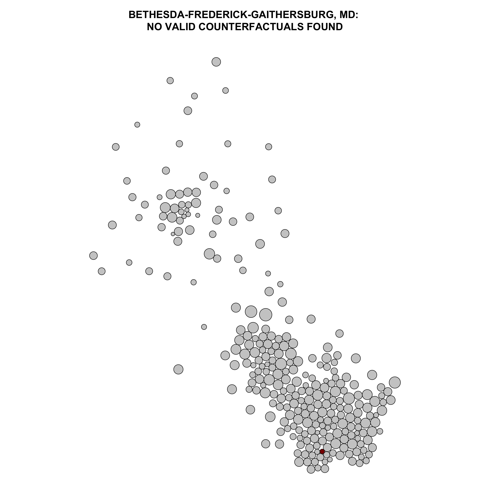
## <br><br><hr><br><br><center><h2>BILLINGS, MT</h2></center>## <br><br><hr><br><br><center><h2>BINGHAMTON, NY</h2></center><br><br><hr><br><br><center><h2>There are no treated tracts in BINGHAMTON, NY.</h2></center><br><br><hr><br><br><br><br><hr><br><br><center><h2>BIRMINGHAM-HOOVER, AL</h2></center>
## -----------------------------------
## Control Treated
## --------------- --------- ---------
## **All** 253 10
##
## **Matched** 5 5
##
## **Unmatched** 70 5
##
## **Discarded** 178 0
## -----------------------------------## <br><br><hr><br><br><center><h2>BISMARCK, ND</h2></center><br><br><hr><br><br><center><h2>There are no treated tracts in BISMARCK, ND.</h2></center><br><br><hr><br><br><br><br><hr><br><br><center><h2>BLOOMINGTON, IN</h2></center>## <br><br><hr><br><br><center><h2>BLOOMINGTON-NORMAL, IL</h2></center><br><br><hr><br><br><center><h2>There are no treated tracts in BLOOMINGTON-NORMAL, IL.</h2></center><br><br><hr><br><br><br><br><hr><br><br><center><h2>BOISE CITY-NAMPA, ID</h2></center>## <br><br><hr><br><br><center><h2>BOSTON-QUINCY, MA</h2></center>## <br><br><hr><br><br><center><h2>BOULDER, CO</h2></center>## <br><br><hr><br><br><center><h2>BOWLING GREEN, KY</h2></center>## <br><br><hr><br><br><center><h2>BRIDGEPORT-STAMFORD-NORWALK, CT</h2></center>## <br><br><hr><br><br><center><h2>BROWNSVILLE-HARLINGEN, TX</h2></center>## <br><br><hr><br><br><center><h2>BRUNSWICK, GA</h2></center>## <br><br><hr><br><br><center><h2>BUFFALO-NIAGARA FALLS, NY</h2></center>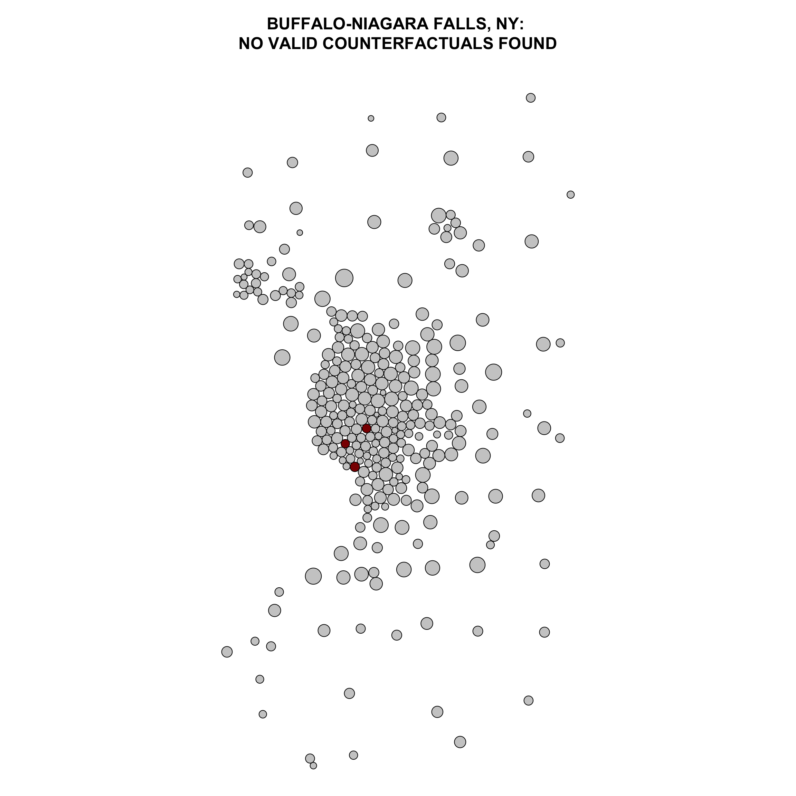
## <br><br><hr><br><br><center><h2>BURLINGTON, NC</h2></center><br><br><hr><br><br><center><h2>There are no treated tracts in BURLINGTON, NC.</h2></center><br><br><hr><br><br><br><br><hr><br><br><center><h2>BURLINGTON-SOUTH BURLINGTON, VT</h2></center>## <br><br><hr><br><br><center><h2>CAMBRIDGE-NEWTON-FRAMINGHAM, MA</h2></center>## <br><br><hr><br><br><center><h2>CAMDEN, NJ</h2></center>## <br><br><hr><br><br><center><h2>CANTON-MASSILLON, OH</h2></center>
## <br><br><hr><br><br><center><h2>CAPE CORAL-FORT MYERS, FL</h2></center>## <br><br><hr><br><br><center><h2>CARSON CITY, NV</h2></center><br><br><hr><br><br><center><h2>There are no treated tracts in CARSON CITY, NV.</h2></center><br><br><hr><br><br><br><br><hr><br><br><center><h2>CEDAR RAPIDS, IA</h2></center>## <br><br><hr><br><br><center><h2>CHAMPAIGN-URBANA, IL</h2></center>## <br><br><hr><br><br><center><h2>CHARLESTON-NORTH CHARLESTON, SC</h2></center>## <br><br><hr><br><br><center><h2>CHARLOTTE-GASTONIA-CONCORD, NC-SC</h2></center>
## <br><br><hr><br><br><center><h2>CHARLOTTESVILLE, VA</h2></center>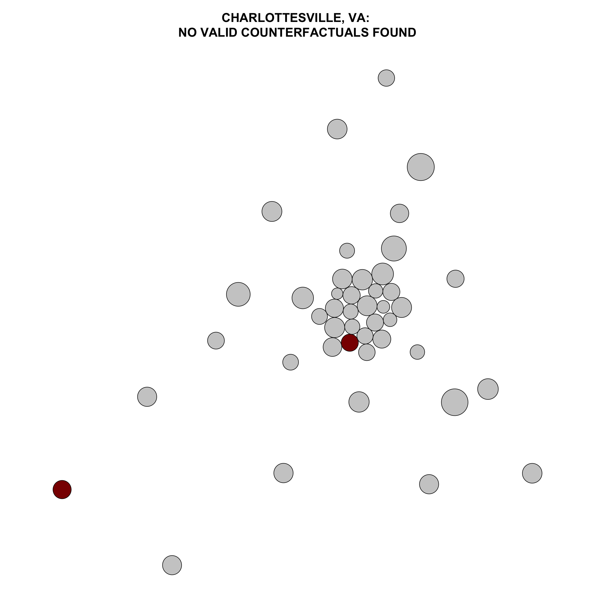
## <br><br><hr><br><br><center><h2>CHATTANOOGA, TN-GA</h2></center>## <br><br><hr><br><br><center><h2>CHICAGO-NAPERVILLE-JOLIET, IL</h2></center>
## -----------------------------------
## Control Treated
## --------------- --------- ---------
## **All** 1774 83
##
## **Matched** 78 78
##
## **Unmatched** 1237 5
##
## **Discarded** 459 0
## -----------------------------------## <br><br><hr><br><br><center><h2>CHICO, CA</h2></center>## <br><br><hr><br><br><center><h2>CINCINNATI-MIDDLETOWN, OH-KY-IN</h2></center>
## -----------------------------------
## Control Treated
## --------------- --------- ---------
## **All** 476 23
##
## **Matched** 7 7
##
## **Unmatched** 325 14
##
## **Discarded** 144 2
## -----------------------------------## <br><br><hr><br><br><center><h2>CLARKSVILLE, TN-KY</h2></center><br><br><hr><br><br><center><h2>There are no treated tracts in CLARKSVILLE, TN-KY.</h2></center><br><br><hr><br><br><br><br><hr><br><br><center><h2>CLEVELAND, TN</h2></center>
## -----------------------------------
## Control Treated
## --------------- --------- ---------
## **All** 592 40
##
## **Matched** 20 20
##
## **Unmatched** 277 19
##
## **Discarded** 295 1
## -----------------------------------## <br><br><hr><br><br><center><h2>CLEVELAND-ELYRIA-MENTOR, OH</h2></center>
## <br><br><hr><br><br><center><h2>COEUR D'ALENE, ID</h2></center>## <br><br><hr><br><br><center><h2>COLLEGE STATION-BRYAN, TX</h2></center><br><br><hr><br><br><center><h2>There are no treated tracts in COLLEGE STATION-BRYAN, TX.</h2></center><br><br><hr><br><br><br><br><hr><br><br><center><h2>COLORADO SPRINGS, CO</h2></center>## <br><br><hr><br><br><center><h2>COLUMBIA, MO</h2></center>## <br><br><hr><br><br><center><h2>COLUMBIA, SC</h2></center>## <br><br><hr><br><br><center><h2>COLUMBUS, GA-AL</h2></center><br><br><hr><br><br><center><h2>There are no treated tracts in COLUMBUS, GA-AL.</h2></center><br><br><hr><br><br><br><br><hr><br><br><center><h2>COLUMBUS, IN</h2></center><br><br><hr><br><br><center><h2>There are no treated tracts in COLUMBUS, IN.</h2></center><br><br><hr><br><br><br><br><hr><br><br><center><h2>COLUMBUS, OH</h2></center>
## -----------------------------------
## Control Treated
## --------------- --------- ---------
## **All** 406 13
##
## **Matched** 4 4
##
## **Unmatched** 236 9
##
## **Discarded** 166 0
## -----------------------------------## <br><br><hr><br><br><center><h2>CORPUS CHRISTI, TX</h2></center>## <br><br><hr><br><br><center><h2>CORVALLIS, OR</h2></center><br><br><hr><br><br><center><h2>There are no treated tracts in CORVALLIS, OR.</h2></center><br><br><hr><br><br><br><br><hr><br><br><center><h2>CUMBERLAND, MD-WV</h2></center><br><br><hr><br><br><center><h2>There are no treated tracts in CUMBERLAND, MD-WV.</h2></center><br><br><hr><br><br><br><br><hr><br><br><center><h2>DALLAS-PLANO-IRVING, TX</h2></center>
## -----------------------------------
## Control Treated
## --------------- --------- ---------
## **All** 872 26
##
## **Matched** 19 19
##
## **Unmatched** 352 7
##
## **Discarded** 501 0
## -----------------------------------## <br><br><hr><br><br><center><h2>DALTON, GA</h2></center><br><br><hr><br><br><center><h2>There are no treated tracts in DALTON, GA.</h2></center><br><br><hr><br><br><br><br><hr><br><br><center><h2>DANVILLE, IL</h2></center>## <br><br><hr><br><br><center><h2>DAVENPORT-MOLINE-ROCK ISLAND, IA-IL</h2></center>## <br><br><hr><br><br><center><h2>DAYTON, OH</h2></center>
## -----------------------------------
## Control Treated
## --------------- --------- ---------
## **All** 214 6
##
## **Matched** 2 2
##
## **Unmatched** 47 4
##
## **Discarded** 165 0
## -----------------------------------## <br><br><hr><br><br><center><h2>DECATUR, AL</h2></center><br><br><hr><br><br><center><h2>There are no treated tracts in DECATUR, AL.</h2></center><br><br><hr><br><br><br><br><hr><br><br><center><h2>DECATUR, IL</h2></center>
## <br><br><hr><br><br><center><h2>DELTONA-DAYTONA BEACH-ORMOND BEACH, FL</h2></center>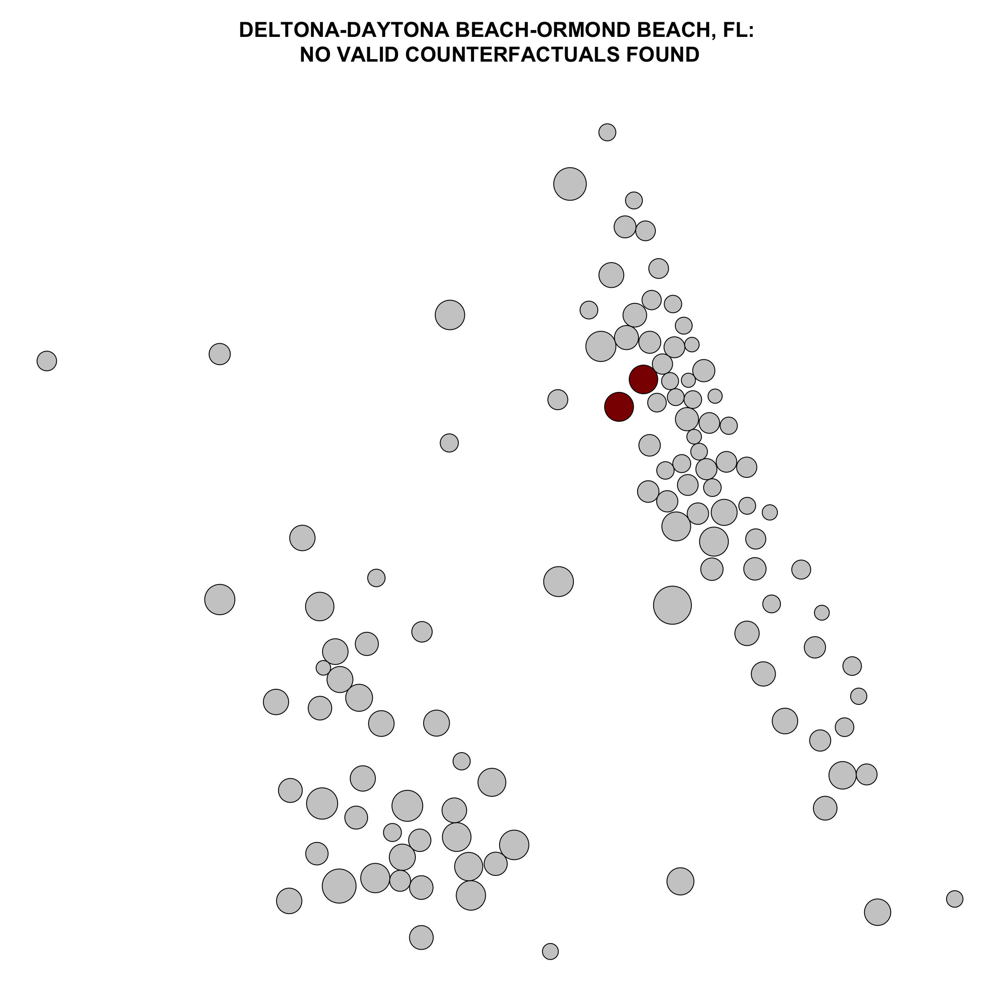
## <br><br><hr><br><br><center><h2>DENVER-AURORA, CO</h2></center>
## -----------------------------------
## Control Treated
## --------------- --------- ---------
## **All** 594 21
##
## **Matched** 10 10
##
## **Unmatched** 308 11
##
## **Discarded** 276 0
## -----------------------------------## <br><br><hr><br><br><center><h2>DES MOINES, IA</h2></center>## <br><br><hr><br><br><center><h2>DETROIT-LIVONIA-DEARBORN, MI</h2></center>
## -----------------------------------
## Control Treated
## --------------- --------- ---------
## **All** 578 25
##
## **Matched** 12 12
##
## **Unmatched** 313 11
##
## **Discarded** 253 2
## -----------------------------------## <br><br><hr><br><br><center><h2>DOTHAN, AL</h2></center>
## <br><br><hr><br><br><center><h2>DOVER, DE</h2></center><br><br><hr><br><br><center><h2>There are no treated tracts in DOVER, DE.</h2></center><br><br><hr><br><br><br><br><hr><br><br><center><h2>DUBUQUE, IA</h2></center>## <br><br><hr><br><br><center><h2>DULUTH, MN-WI</h2></center>## <br><br><hr><br><br><center><h2>DURHAM, NC</h2></center>
## -----------------------------------
## Control Treated
## --------------- --------- ---------
## **All** 99 8
##
## **Matched** 3 3
##
## **Unmatched** 45 4
##
## **Discarded** 51 1
## -----------------------------------## <br><br><hr><br><br><center><h2>EDISON, NJ</h2></center>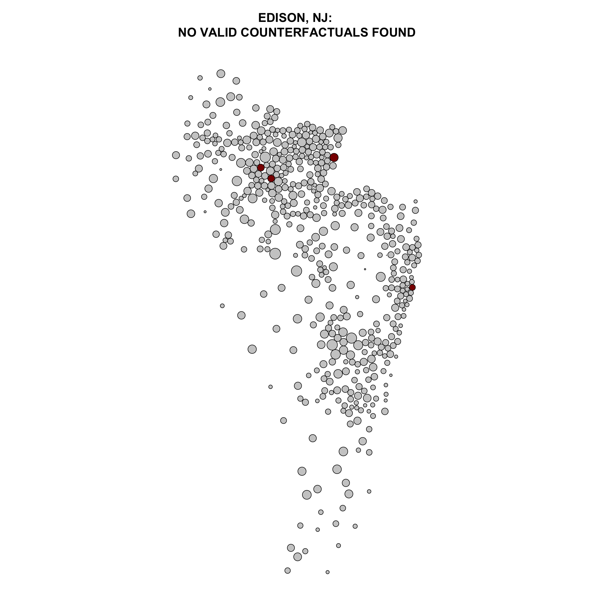
## <br><br><hr><br><br><center><h2>EL CENTRO, CA</h2></center>## <br><br><hr><br><br><center><h2>EL PASO, TX</h2></center>
## -----------------------------------
## Control Treated
## --------------- --------- ---------
## **All** 156 4
##
## **Matched** 3 3
##
## **Unmatched** 108 1
##
## **Discarded** 45 0
## -----------------------------------## <br><br><hr><br><br><center><h2>ELIZABETHTOWN, KY</h2></center><br><br><hr><br><br><center><h2>There are no treated tracts in ELIZABETHTOWN, KY.</h2></center><br><br><hr><br><br><br><br><hr><br><br><center><h2>ELKHART-GOSHEN, IN</h2></center><br><br><hr><br><br><center><h2>There are no treated tracts in ELKHART-GOSHEN, IN.</h2></center><br><br><hr><br><br><br><br><hr><br><br><center><h2>ELMIRA, NY</h2></center><br><br><hr><br><br><center><h2>There are no treated tracts in ELMIRA, NY.</h2></center><br><br><hr><br><br><br><br><hr><br><br><center><h2>ERIE, PA</h2></center>## <br><br><hr><br><br><center><h2>ESSEX COUNTY, MA</h2></center>## <br><br><hr><br><br><center><h2>EUGENE-SPRINGFIELD, OR</h2></center>## <br><br><hr><br><br><center><h2>EVANSVILLE, IN-KY</h2></center>## <br><br><hr><br><br><center><h2>FAIRBANKS, AK</h2></center><br><br><hr><br><br><center><h2>There are no treated tracts in FAIRBANKS, AK.</h2></center><br><br><hr><br><br><br><br><hr><br><br><center><h2>FARGO, ND-MN</h2></center>## <br><br><hr><br><br><center><h2>FARMINGTON, NM</h2></center>## <br><br><hr><br><br><center><h2>FAYETTEVILLE, NC</h2></center><br><br><hr><br><br><center><h2>There are no treated tracts in FAYETTEVILLE, NC.</h2></center><br><br><hr><br><br><br><br><hr><br><br><center><h2>FAYETTEVILLE-SPRINGDALE-ROGERS, AR-MO</h2></center>## <br><br><hr><br><br><center><h2>FLAGSTAFF, AZ</h2></center><br><br><hr><br><br><center><h2>There are no treated tracts in FLAGSTAFF, AZ.</h2></center><br><br><hr><br><br><br><br><hr><br><br><center><h2>FLINT, MI</h2></center>## <br><br><hr><br><br><center><h2>FLORENCE, SC</h2></center><br><br><hr><br><br><center><h2>There are no treated tracts in FLORENCE, SC.</h2></center><br><br><hr><br><br><br><br><hr><br><br><center><h2>FLORENCE-MUSCLE SHOALS, AL</h2></center>## <br><br><hr><br><br><center><h2>FORT COLLINS-LOVELAND, CO</h2></center>## <br><br><hr><br><br><center><h2>FORT SMITH, AR-OK</h2></center>## <br><br><hr><br><br><center><h2>FORT WALTON BEACH-CRESTVIEW-DESTIN, FL</h2></center>## <br><br><hr><br><br><center><h2>FORT WAYNE, IN</h2></center>## <br><br><hr><br><br><center><h2>FORT WORTH-ARLINGTON, TX</h2></center>
## -----------------------------------
## Control Treated
## --------------- --------- ---------
## **All** 404 10
##
## **Matched** 6 6
##
## **Unmatched** 257 4
##
## **Discarded** 141 0
## -----------------------------------## <br><br><hr><br><br><center><h2>FRESNO, CA</h2></center>
## -----------------------------------
## Control Treated
## --------------- --------- ---------
## **All** 188 11
##
## **Matched** 2 2
##
## **Unmatched** 101 7
##
## **Discarded** 85 2
## -----------------------------------## <br><br><hr><br><br><center><h2>FT LAUDERDALE-POMPANO BEACH-DEERFIELD</h2></center>## <br><br><hr><br><br><center><h2>GADSDEN, AL</h2></center><br><br><hr><br><br><center><h2>There are no treated tracts in GADSDEN, AL.</h2></center><br><br><hr><br><br><br><br><hr><br><br><center><h2>GAINESVILLE, FL</h2></center>## <br><br><hr><br><br><center><h2>GAINESVILLE, GA</h2></center><br><br><hr><br><br><center><h2>There are no treated tracts in GAINESVILLE, GA.</h2></center><br><br><hr><br><br><br><br><hr><br><br><center><h2>GARY, IN IVISION</h2></center>## <br><br><hr><br><br><center><h2>GLENS FALLS, NY</h2></center><br><br><hr><br><br><center><h2>There are no treated tracts in GLENS FALLS, NY.</h2></center><br><br><hr><br><br><br><br><hr><br><br><center><h2>GOLDSBORO, NC</h2></center>## <br><br><hr><br><br><center><h2>GRAND FORKS, ND-MN</h2></center><br><br><hr><br><br><center><h2>There are no treated tracts in GRAND FORKS, ND-MN.</h2></center><br><br><hr><br><br><br><br><hr><br><br><center><h2>GRAND JUNCTION, CO</h2></center><br><br><hr><br><br><center><h2>There are no treated tracts in GRAND JUNCTION, CO.</h2></center><br><br><hr><br><br><br><br><hr><br><br><center><h2>GRAND RAPIDS-WYOMING, MI</h2></center>
## -----------------------------------
## Control Treated
## --------------- --------- ---------
## **All** 156 7
##
## **Matched** 2 2
##
## **Unmatched** 13 3
##
## **Discarded** 141 2
## -----------------------------------## <br><br><hr><br><br><center><h2>GREAT FALLS, MT</h2></center>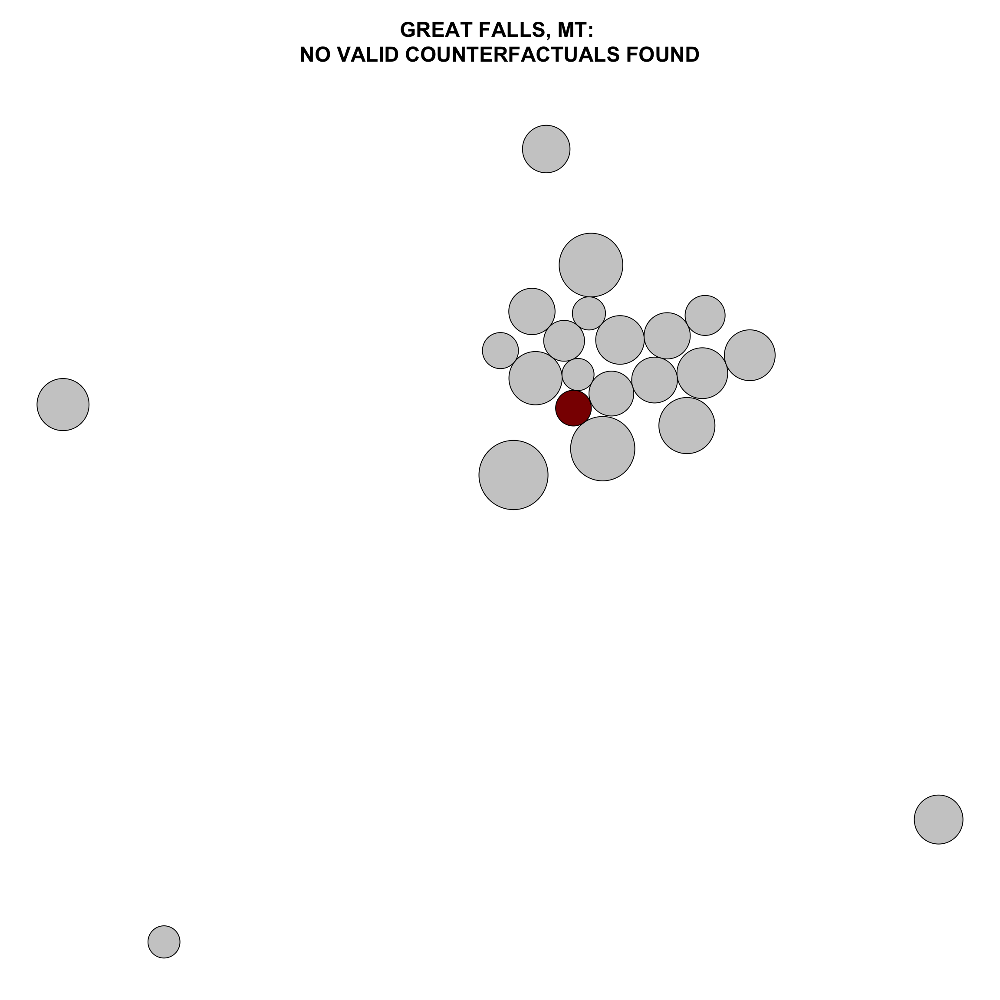
## <br><br><hr><br><br><center><h2>GREELEY, CO</h2></center><br><br><hr><br><br><center><h2>There are no treated tracts in GREELEY, CO.</h2></center><br><br><hr><br><br><br><br><hr><br><br><center><h2>GREENSBORO-HIGH POINT, NC</h2></center>## <br><br><hr><br><br><center><h2>GREENVILLE, NC</h2></center><br><br><hr><br><br><center><h2>There are no treated tracts in GREENVILLE, NC.</h2></center><br><br><hr><br><br><br><br><hr><br><br><center><h2>GREENVILLE, SC</h2></center>
## -----------------------------------
## Control Treated
## --------------- --------- ---------
## **All** 147 9
##
## **Matched** 2 2
##
## **Unmatched** 63 7
##
## **Discarded** 82 0
## -----------------------------------## <br><br><hr><br><br><center><h2>GULFPORT-BILOXI, MS</h2></center>## <br><br><hr><br><br><center><h2>HAGERSTOWN-MARTINSBURG, MD-WV</h2></center>## <br><br><hr><br><br><center><h2>HANFORD-CORCORAN, CA</h2></center>## <br><br><hr><br><br><center><h2>HARRISBURG-CARLISLE, PA</h2></center>## <br><br><hr><br><br><center><h2>HARTFORD-WEST HARTFORD-EAST HARTFORD, C</h2></center>## <br><br><hr><br><br><center><h2>HATTIESBURG, MS</h2></center>
## <br><br><hr><br><br><center><h2>HICKORY-LENOIR-MORGANTON, NC</h2></center><br><br><hr><br><br><center><h2>There are no treated tracts in HICKORY-LENOIR-MORGANTON, NC.</h2></center><br><br><hr><br><br><br><br><hr><br><br><center><h2>HINESVILLE-FORT STEWART, GA</h2></center><br><br><hr><br><br><center><h2>There are no treated tracts in HINESVILLE-FORT STEWART, GA.</h2></center><br><br><hr><br><br><br><br><hr><br><br><center><h2>HOLLAND-GRAND HAVEN, MI</h2></center><br><br><hr><br><br><center><h2>There are no treated tracts in HOLLAND-GRAND HAVEN, MI.</h2></center><br><br><hr><br><br><br><br><hr><br><br><center><h2>HONOLULU, HI</h2></center>## <br><br><hr><br><br><center><h2>HOT SPRINGS, AR</h2></center>## <br><br><hr><br><br><center><h2>HOUMA-BAYOU CANE-THIBODAUX, LA</h2></center>## <br><br><hr><br><br><center><h2>HOUSTON-BAYTOWN-SUGAR LAND, TX</h2></center>
## -----------------------------------
## Control Treated
## --------------- --------- ---------
## **All** 1052 20
##
## **Matched** 15 15
##
## **Unmatched** 637 5
##
## **Discarded** 400 0
## -----------------------------------
## <br><br><hr><br><br><center><h2>HUNTINGTON-ASHLAND, WV-KY-OH</h2></center>## <br><br><hr><br><br><center><h2>HUNTSVILLE, AL</h2></center>## <br><br><hr><br><br><center><h2>IDAHO FALLS, ID</h2></center>## <br><br><hr><br><br><center><h2>INDIANAPOLIS, IN</h2></center>
## -----------------------------------
## Control Treated
## --------------- --------- ---------
## **All** 351 9
##
## **Matched** 4 4
##
## **Unmatched** 147 5
##
## **Discarded** 200 0
## -----------------------------------## <br><br><hr><br><br><center><h2>IOWA CITY, IA</h2></center>## <br><br><hr><br><br><center><h2>ITHACA, NY</h2></center>## <br><br><hr><br><br><center><h2>JACKSON, MI</h2></center><br><br><hr><br><br><center><h2>There are no treated tracts in JACKSON, MI.</h2></center><br><br><hr><br><br><br><br><hr><br><br><center><h2>JACKSON, MS</h2></center>
## -----------------------------------
## Control Treated
## --------------- --------- ---------
## **All** 110 13
##
## **Matched** 4 4
##
## **Unmatched** 28 7
##
## **Discarded** 78 2
## -----------------------------------## <br><br><hr><br><br><center><h2>JACKSON, TN</h2></center>## <br><br><hr><br><br><center><h2>JACKSONVILLE, FL</h2></center>## <br><br><hr><br><br><center><h2>JACKSONVILLE, NC</h2></center><br><br><hr><br><br><center><h2>There are no treated tracts in JACKSONVILLE, NC.</h2></center><br><br><hr><br><br><br><br><hr><br><br><center><h2>JEFFERSON CITY, MO</h2></center>## <br><br><hr><br><br><center><h2>JOHNSON CITY, TN</h2></center><br><br><hr><br><br><center><h2>There are no treated tracts in JOHNSON CITY, TN.</h2></center><br><br><hr><br><br><br><br><hr><br><br><center><h2>JOHNSTOWN, PA</h2></center><br><br><hr><br><br><center><h2>There are no treated tracts in JOHNSTOWN, PA.</h2></center><br><br><hr><br><br><br><br><hr><br><br><center><h2>JONESBORO, AR</h2></center><br><br><hr><br><br><center><h2>There are no treated tracts in JONESBORO, AR.</h2></center><br><br><hr><br><br><br><br><hr><br><br><center><h2>JOPLIN, MO</h2></center><br><br><hr><br><br><center><h2>There are no treated tracts in JOPLIN, MO.</h2></center><br><br><hr><br><br><br><br><hr><br><br><center><h2>KALAMAZOO-PORTAGE, MI</h2></center>## <br><br><hr><br><br><center><h2>KANKAKEE-BRADLEY, IL</h2></center><br><br><hr><br><br><center><h2>There are no treated tracts in KANKAKEE-BRADLEY, IL.</h2></center><br><br><hr><br><br><br><br><hr><br><br><center><h2>KANSAS CITY, MO-KS</h2></center>
## -----------------------------------
## Control Treated
## --------------- --------- ---------
## **All** 463 59
##
## **Matched** 35 35
##
## **Unmatched** 153 24
##
## **Discarded** 275 0
## -----------------------------------## <br><br><hr><br><br><center><h2>KILLEEN-TEMPLE-FORT HOOD, TX</h2></center><br><br><hr><br><br><center><h2>There are no treated tracts in KILLEEN-TEMPLE-FORT HOOD, TX.</h2></center><br><br><hr><br><br><br><br><hr><br><br><center><h2>KINGSPORT-BRISTOL-BRISTOL, TN-VA</h2></center>## <br><br><hr><br><br><center><h2>KINGSTON, NY</h2></center><br><br><hr><br><br><center><h2>There are no treated tracts in KINGSTON, NY.</h2></center><br><br><hr><br><br><br><br><hr><br><br><center><h2>KNOXVILLE, TN</h2></center>## <br><br><hr><br><br><center><h2>KOKOMO, IN</h2></center><br><br><hr><br><br><center><h2>There are no treated tracts in KOKOMO, IN.</h2></center><br><br><hr><br><br><br><br><hr><br><br><center><h2>LA CROSSE, WI-MN</h2></center>## <br><br><hr><br><br><center><h2>LAFAYETTE, IN</h2></center>## <br><br><hr><br><br><center><h2>LAFAYETTE, LA</h2></center>## <br><br><hr><br><br><center><h2>LAKE CHARLES, LA</h2></center>## <br><br><hr><br><br><center><h2>LAKE COUNTY-KENOSHA COUNTY, IL-WI</h2></center>## <br><br><hr><br><br><center><h2>LAKELAND, FL</h2></center>
## -----------------------------------
## Control Treated
## --------------- --------- ---------
## **All** 148 5
##
## **Matched** 2 2
##
## **Unmatched** 51 3
##
## **Discarded** 95 0
## -----------------------------------
## <br><br><hr><br><br><center><h2>LANCASTER, PA</h2></center>## <br><br><hr><br><br><center><h2>LANSING-EAST LANSING, MI</h2></center>## <br><br><hr><br><br><center><h2>LAREDO, TX</h2></center>## <br><br><hr><br><br><center><h2>LAS CRUCES, NM</h2></center>## <br><br><hr><br><br><center><h2>LAS VEGAS-PARADISE, NV</h2></center>
## -----------------------------------
## Control Treated
## --------------- --------- ---------
## **All** 475 12
##
## **Matched** 6 6
##
## **Unmatched** 331 6
##
## **Discarded** 138 0
## -----------------------------------## <br><br><hr><br><br><center><h2>LAWRENCE, KS</h2></center>## <br><br><hr><br><br><center><h2>LAWTON, OK</h2></center>## <br><br><hr><br><br><center><h2>LEBANON, PA</h2></center><br><br><hr><br><br><center><h2>There are no treated tracts in LEBANON, PA.</h2></center><br><br><hr><br><br><br><br><hr><br><br><center><h2>LEWISTON, ID-WA</h2></center>## <br><br><hr><br><br><center><h2>LEWISTON-AUBURN, ME</h2></center><br><br><hr><br><br><center><h2>There are no treated tracts in LEWISTON-AUBURN, ME.</h2></center><br><br><hr><br><br><br><br><hr><br><br><center><h2>LEXINGTON-FAYETTE, KY</h2></center>## <br><br><hr><br><br><center><h2>LIMA, OH</h2></center><br><br><hr><br><br><center><h2>There are no treated tracts in LIMA, OH.</h2></center><br><br><hr><br><br><br><br><hr><br><br><center><h2>LINCOLN, NE</h2></center>## <br><br><hr><br><br><center><h2>LITTLE ROCK-NORTH LITTLE ROCK, AR</h2></center>## <br><br><hr><br><br><center><h2>LOGAN, UT-ID</h2></center><br><br><hr><br><br><center><h2>There are no treated tracts in LOGAN, UT-ID.</h2></center><br><br><hr><br><br><br><br><hr><br><br><center><h2>LONGVIEW, TX</h2></center><br><br><hr><br><br><center><h2>There are no treated tracts in LONGVIEW, TX.</h2></center><br><br><hr><br><br>fo <- as.formula( "treatment ~ hinc12 + pcol12 + pnhwht12" )
cbsa.code.list <- unique( dorlings.catalog$cbsa )
for( i in cbsa.code.list [193:195] )
{
get_matches( cbsa.code=i,
cbsa.catalog=dorlings.catalog,
df.treatment=df.treatment,
fo=fo )
}## <br><br><hr><br><br><center><h2>LOUISVILLE, KY-IN</h2></center>
## -----------------------------------
## Control Treated
## --------------- --------- ---------
## **All** 307 9
##
## **Matched** 5 5
##
## **Unmatched** 82 2
##
## **Discarded** 220 2
## -----------------------------------## <br><br><hr><br><br><center><h2>LUBBOCK, TX</h2></center><br><br><hr><br><br><center><h2>There are no treated tracts in LUBBOCK, TX.</h2></center><br><br><hr><br><br><br><br><hr><br><br><center><h2>LYNCHBURG, VA</h2></center><br><br><hr><br><br><center><h2>There are no treated tracts in LYNCHBURG, VA.</h2></center><br><br><hr><br><br>fo <- as.formula( "treatment ~ hinc12 + pcol12 + pnhwht12" )
cbsa.code.list <- unique( dorlings.catalog$cbsa )
for( i in cbsa.code.list [196:206] )
{
get_matches( cbsa.code=i,
cbsa.catalog=dorlings.catalog,
df.treatment=df.treatment,
fo=fo )
}## <br><br><hr><br><br><center><h2>MACON, GA</h2></center><br><br><hr><br><br><center><h2>There are no treated tracts in MACON, GA.</h2></center><br><br><hr><br><br><br><br><hr><br><br><center><h2>MADERA, CA</h2></center>## <br><br><hr><br><br><center><h2>MANCHESTER-NASHUA, NH</h2></center>## <br><br><hr><br><br><center><h2>MANSFIELD, OH</h2></center><br><br><hr><br><br><center><h2>There are no treated tracts in MANSFIELD, OH.</h2></center><br><br><hr><br><br><br><br><hr><br><br><center><h2>MCALLEN-EDINBURG-PHARR, TX</h2></center>## <br><br><hr><br><br><center><h2>MEDFORD, OR</h2></center>## <br><br><hr><br><br><center><h2>MEMPHIS, TN-MS-AR</h2></center>
## -----------------------------------
## Control Treated
## --------------- --------- ---------
## **All** 294 15
##
## **Matched** 7 7
##
## **Unmatched** 118 8
##
## **Discarded** 169 0
## -----------------------------------## <br><br><hr><br><br><center><h2>MERCED, CA</h2></center>## <br><br><hr><br><br><center><h2>MIAMI-MIAMI BEACH-KENDALL, FL</h2></center>
## -----------------------------------
## Control Treated
## --------------- --------- ---------
## **All** 485 25
##
## **Matched** 17 17
##
## **Unmatched** 287 7
##
## **Discarded** 181 1
## -----------------------------------## <br><br><hr><br><br><center><h2>MICHIGAN CITY-LA PORTE, IN</h2></center><br><br><hr><br><br><center><h2>There are no treated tracts in MICHIGAN CITY-LA PORTE, IN.</h2></center><br><br><hr><br><br><br><br><hr><br><br><center><h2>MIDLAND, TX</h2></center>
fo <- as.formula( "treatment ~ hinc12 + pcol12 + pnhwht12" )
cbsa.code.list <- unique( dorlings.catalog$cbsa )
for( i in cbsa.code.list [208:293] )
{
get_matches( cbsa.code=i,
cbsa.catalog=dorlings.catalog,
df.treatment=df.treatment,
fo=fo )
}## <br><br><hr><br><br><center><h2>MINNEAPOLIS-ST. PAUL-BLOOMINGTON, MN-WI</h2></center>
## -----------------------------------
## Control Treated
## --------------- --------- ---------
## **All** 735 36
##
## **Matched** 9 9
##
## **Unmatched** 329 25
##
## **Discarded** 397 2
## -----------------------------------## <br><br><hr><br><br><center><h2>MISSOULA, MT</h2></center>## <br><br><hr><br><br><center><h2>MOBILE, AL</h2></center>## <br><br><hr><br><br><center><h2>MODESTO, CA</h2></center>
## <br><br><hr><br><br><center><h2>MONROE, LA</h2></center>## <br><br><hr><br><br><center><h2>MONROE, MI</h2></center><br><br><hr><br><br><center><h2>There are no treated tracts in MONROE, MI.</h2></center><br><br><hr><br><br><br><br><hr><br><br><center><h2>MONTGOMERY, AL</h2></center>## <br><br><hr><br><br><center><h2>MORRISTOWN, TN</h2></center><br><br><hr><br><br><center><h2>There are no treated tracts in MORRISTOWN, TN.</h2></center><br><br><hr><br><br><br><br><hr><br><br><center><h2>MUNCIE, IN</h2></center>## <br><br><hr><br><br><center><h2>MUSKEGON-NORTON SHORES, MI A</h2></center><br><br><hr><br><br><center><h2>There are no treated tracts in MUSKEGON-NORTON SHORES, MI A.</h2></center><br><br><hr><br><br><br><br><hr><br><br><center><h2>MYRTLE BEACH-CONWAY-NORTH MYRTLE BEACH,</h2></center>## <br><br><hr><br><br><center><h2>NAPA, CA</h2></center>## <br><br><hr><br><br><center><h2>NAPLES-MARCO ISLAND, FL A</h2></center><br><br><hr><br><br><center><h2>There are no treated tracts in NAPLES-MARCO ISLAND, FL A.</h2></center><br><br><hr><br><br><br><br><hr><br><br><center><h2>NASHVILLE-DAVIDSON--MURFREESBORO, TN</h2></center>
## -----------------------------------
## Control Treated
## --------------- --------- ---------
## **All** 354 7
##
## **Matched** 3 3
##
## **Unmatched** 103 3
##
## **Discarded** 248 1
## -----------------------------------## <br><br><hr><br><br><center><h2>NASSAU-SUFFOLK, NY</h2></center>## <br><br><hr><br><br><center><h2>NEW HAVEN-MILFORD, CT</h2></center>## <br><br><hr><br><br><center><h2>NEW ORLEANS-METAIRIE-KENNER, LA</h2></center>
## -----------------------------------
## Control Treated
## --------------- --------- ---------
## **All** 334 55
##
## **Matched** 33 33
##
## **Unmatched** 212 22
##
## **Discarded** 89 0
## -----------------------------------## <br><br><hr><br><br><center><h2>NEW YORK-WAYNE-WHITE PLAINS, NY-NJ</h2></center>## <br><br><hr><br><br><center><h2>NEWARK-UNION, NJ-PA</h2></center>
## -----------------------------------
## Control Treated
## --------------- --------- ---------
## **All** 488 15
##
## **Matched** 5 5
##
## **Unmatched** 131 10
##
## **Discarded** 352 0
## -----------------------------------## <br><br><hr><br><br><center><h2>NILES-BENTON HARBOR, MI</h2></center>## <br><br><hr><br><br><center><h2>NORWICH-NEW LONDON, CT</h2></center><br><br><hr><br><br><center><h2>There are no treated tracts in NORWICH-NEW LONDON, CT.</h2></center><br><br><hr><br><br><br><br><hr><br><br><center><h2>OAKLAND-FREMONT-HAYWARD, CA</h2></center>
## -----------------------------------
## Control Treated
## --------------- --------- ---------
## **All** 545 22
##
## **Matched** 14 14
##
## **Unmatched** 205 7
##
## **Discarded** 326 1
## -----------------------------------## <br><br><hr><br><br><center><h2>OCALA, FL</h2></center><br><br><hr><br><br><center><h2>There are no treated tracts in OCALA, FL.</h2></center><br><br><hr><br><br><br><br><hr><br><br><center><h2>OCEAN CITY, NJ</h2></center><br><br><hr><br><br><center><h2>There are no treated tracts in OCEAN CITY, NJ.</h2></center><br><br><hr><br><br><br><br><hr><br><br><center><h2>ODESSA, TX</h2></center><br><br><hr><br><br><center><h2>There are no treated tracts in ODESSA, TX.</h2></center><br><br><hr><br><br><br><br><hr><br><br><center><h2>OGDEN-CLEARFIELD, UT</h2></center>
## <br><br><hr><br><br><center><h2>OKLAHOMA CITY, OK</h2></center>
## -----------------------------------
## Control Treated
## --------------- --------- ---------
## **All** 350 13
##
## **Matched** 8 8
##
## **Unmatched** 286 5
##
## **Discarded** 56 0
## -----------------------------------## <br><br><hr><br><br><center><h2>OMAHA-COUNCIL BLUFFS, NE-IA</h2></center>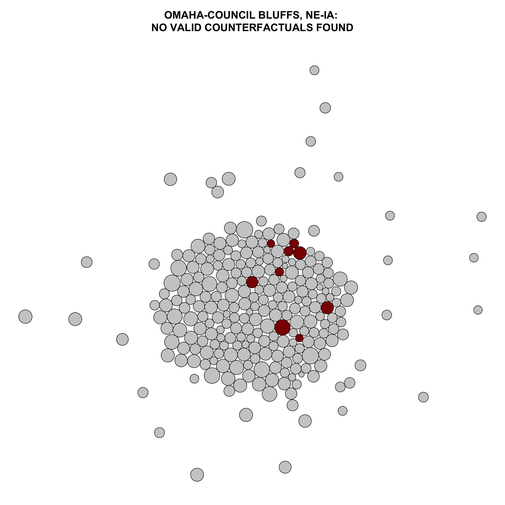
## <br><br><hr><br><br><center><h2>ORLANDO, FL</h2></center>
## -----------------------------------
## Control Treated
## --------------- --------- ---------
## **All** 379 10
##
## **Matched** 4 4
##
## **Unmatched** 153 6
##
## **Discarded** 222 0
## -----------------------------------## <br><br><hr><br><br><center><h2>OWENSBORO, KY</h2></center>## <br><br><hr><br><br><center><h2>OXNARD-THOUSAND OAKS-VENTURA, CA</h2></center>## <br><br><hr><br><br><center><h2>PALM BAY-MELBOURNE-TITUSVILLE, FL</h2></center>## <br><br><hr><br><br><center><h2>PANAMA CITY-LYNN HAVEN, FL</h2></center><br><br><hr><br><br><center><h2>There are no treated tracts in PANAMA CITY-LYNN HAVEN, FL.</h2></center><br><br><hr><br><br><br><br><hr><br><br><center><h2>PARKERSBURG-MARIETTA, WV-OH</h2></center><br><br><hr><br><br><center><h2>There are no treated tracts in PARKERSBURG-MARIETTA, WV-OH.</h2></center><br><br><hr><br><br><br><br><hr><br><br><center><h2>PASCAGOULA, MS</h2></center>## <br><br><hr><br><br><center><h2>PENSACOLA-FERRY PASS-BRENT, FL</h2></center>## <br><br><hr><br><br><center><h2>PEORIA, IL</h2></center>## <br><br><hr><br><br><center><h2>PHILADELPHIA, PA</h2></center>
## -----------------------------------
## Control Treated
## --------------- --------- ---------
## **All** 952 36
##
## **Matched** 19 19
##
## **Unmatched** 272 16
##
## **Discarded** 661 1
## -----------------------------------## <br><br><hr><br><br><center><h2>PHOENIX-MESA-SCOTTSDALE, AZ</h2></center>
## -----------------------------------
## Control Treated
## --------------- --------- ---------
## **All** 965 22
##
## **Matched** 15 15
##
## **Unmatched** 624 7
##
## **Discarded** 326 0
## -----------------------------------## <br><br><hr><br><br><center><h2>PINE BLUFF, AR</h2></center>## <br><br><hr><br><br><center><h2>PITTSBURGH, PA</h2></center>
## -----------------------------------
## Control Treated
## --------------- --------- ---------
## **All** 680 24
##
## **Matched** 10 10
##
## **Unmatched** 666 13
##
## **Discarded** 4 1
## -----------------------------------## <br><br><hr><br><br><center><h2>PITTSFIELD, MA</h2></center>## <br><br><hr><br><br><center><h2>POCATELLO, ID</h2></center>
## <br><br><hr><br><br><center><h2>PORT ST. LUCIE-FORT PIERCE, FL</h2></center>## <br><br><hr><br><br><center><h2>PORTLAND-SOUTH PORTLAND-BIDDEFORD, ME</h2></center>
## <br><br><hr><br><br><center><h2>PORTLAND-VANCOUVER-BEAVERTON, OR-WA</h2></center>
## -----------------------------------
## Control Treated
## --------------- --------- ---------
## **All** 462 28
##
## **Matched** 14 14
##
## **Unmatched** 216 14
##
## **Discarded** 232 0
## -----------------------------------## <br><br><hr><br><br><center><h2>POUGHKEEPSIE-NEWBURGH-MIDDLETOWN, NY</h2></center>## <br><br><hr><br><br><center><h2>PRESCOTT, AZ</h2></center><br><br><hr><br><br><center><h2>There are no treated tracts in PRESCOTT, AZ.</h2></center><br><br><hr><br><br><br><br><hr><br><br><center><h2>PROVIDENCE-NEW BEDFORD-FALL RIVER, RI-M</h2></center>
## -----------------------------------
## Control Treated
## --------------- --------- ---------
## **All** 322 43
##
## **Matched** 20 20
##
## **Unmatched** 204 23
##
## **Discarded** 98 0
## -----------------------------------## <br><br><hr><br><br><center><h2>PROVO-OREM, UT</h2></center>
## <br><br><hr><br><br><center><h2>PUEBLO, CO</h2></center>## <br><br><hr><br><br><center><h2>PUNTA GORDA, FL</h2></center><br><br><hr><br><br><center><h2>There are no treated tracts in PUNTA GORDA, FL.</h2></center><br><br><hr><br><br><br><br><hr><br><br><center><h2>RALEIGH-CARY, NC</h2></center>## <br><br><hr><br><br><center><h2>RAPID CITY, SD</h2></center>## <br><br><hr><br><br><center><h2>READING, PA</h2></center>## <br><br><hr><br><br><center><h2>REDDING, CA</h2></center>## <br><br><hr><br><br><center><h2>RENO-SPARKS, NV</h2></center>## <br><br><hr><br><br><center><h2>RICHMOND, VA</h2></center>## <br><br><hr><br><br><center><h2>RIVERSIDE-SAN BERNARDINO-ONTARIO, CA</h2></center>
## -----------------------------------
## Control Treated
## --------------- --------- ---------
## **All** 814 6
##
## **Matched** 2 2
##
## **Unmatched** 379 4
##
## **Discarded** 433 0
## -----------------------------------## <br><br><hr><br><br><center><h2>ROCHESTER, MN</h2></center>## <br><br><hr><br><br><center><h2>ROCHESTER, NY</h2></center>
## <br><br><hr><br><br><center><h2>ROCKFORD, IL</h2></center>## <br><br><hr><br><br><center><h2>ROCKINGHAM COUNTY, NH</h2></center>## <br><br><hr><br><br><center><h2>ROCKY MOUNT, NC</h2></center>## <br><br><hr><br><br><center><h2>ROME, GA</h2></center><br><br><hr><br><br><center><h2>There are no treated tracts in ROME, GA.</h2></center><br><br><hr><br><br><br><br><hr><br><br><center><h2>SACRAMENTO--ARDEN-ARCADE--ROSEVILLE, CA</h2></center>## <br><br><hr><br><br><center><h2>SAGINAW-SAGINAW TOWNSHIP NORTH, MI</h2></center>## <br><br><hr><br><br><center><h2>SALEM, OR</h2></center>## <br><br><hr><br><br><center><h2>SALINAS, CA</h2></center><br><br><hr><br><br><center><h2>There are no treated tracts in SALINAS, CA.</h2></center><br><br><hr><br><br><br><br><hr><br><br><center><h2>SALISBURY, MD</h2></center><br><br><hr><br><br><center><h2>There are no treated tracts in SALISBURY, MD.</h2></center><br><br><hr><br><br><br><br><hr><br><br><center><h2>SALT LAKE CITY, UT</h2></center>
## -----------------------------------
## Control Treated
## --------------- --------- ---------
## **All** 215 19
##
## **Matched** 4 4
##
## **Unmatched** 56 11
##
## **Discarded** 155 4
## -----------------------------------## <br><br><hr><br><br><center><h2>SAN ANGELO, TX</h2></center><br><br><hr><br><br><center><h2>There are no treated tracts in SAN ANGELO, TX.</h2></center><br><br><hr><br><br><br><br><hr><br><br><center><h2>SAN ANTONIO, TX</h2></center>
## -----------------------------------
## Control Treated
## --------------- --------- ---------
## **All** 439 15
##
## **Matched** 10 10
##
## **Unmatched** 119 5
##
## **Discarded** 310 0
## -----------------------------------## <br><br><hr><br><br><center><h2>SAN DIEGO-CARLSBAD-SAN MARCOS, CA</h2></center>
## -----------------------------------
## Control Treated
## --------------- --------- ---------
## **All** 607 19
##
## **Matched** 13 13
##
## **Unmatched** 305 5
##
## **Discarded** 289 1
## -----------------------------------## <br><br><hr><br><br><center><h2>SAN FRANCISCO-SAN MATEO-REDWOOD CITY,CA</h2></center>
## -----------------------------------
## Control Treated
## --------------- --------- ---------
## **All** 391 15
##
## **Matched** 6 6
##
## **Unmatched** 348 9
##
## **Discarded** 37 0
## -----------------------------------## <br><br><hr><br><br><center><h2>SAN JOSE-SUNNYVALE-SANTA CLARA, CA</h2></center>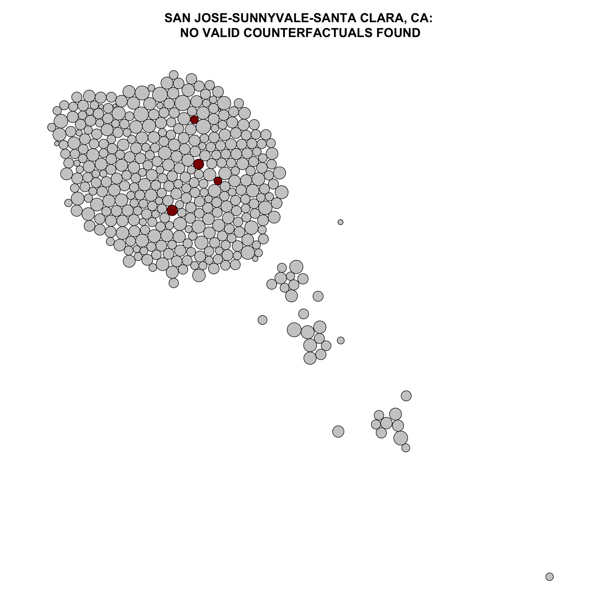
## <br><br><hr><br><br><center><h2>SAN LUIS OBISPO-PASO ROBLES, CA</h2></center>## <br><br><hr><br><br><center><h2>SANDUSKY, OH</h2></center>
## <br><br><hr><br><br><center><h2>SANTA ANA-ANAHEIM-IRVINE, CA</h2></center>
## -----------------------------------
## Control Treated
## --------------- --------- ---------
## **All** 577 5
##
## **Matched** 4 4
##
## **Unmatched** 235 0
##
## **Discarded** 338 1
## -----------------------------------## <br><br><hr><br><br><center><h2>SANTA BARBARA-SANTA MARIA-GOLETA, CA</h2></center><br><br><hr><br><br><center><h2>There are no treated tracts in SANTA BARBARA-SANTA MARIA-GOLETA, CA.</h2></center><br><br><hr><br><br><br><br><hr><br><br><center><h2>SANTA CRUZ-WATSONVILLE, CA</h2></center>## <br><br><hr><br><br><center><h2>SANTA FE, NM</h2></center>## <br><br><hr><br><br><center><h2>SANTA ROSA-PETALUMA, CA</h2></center><br><br><hr><br><br><center><h2>There are no treated tracts in SANTA ROSA-PETALUMA, CA.</h2></center><br><br><hr><br><br><br><br><hr><br><br><center><h2>SARASOTA-BRADENTON-VENICE, FL</h2></center>## <br><br><hr><br><br><center><h2>SAVANNAH, GA</h2></center>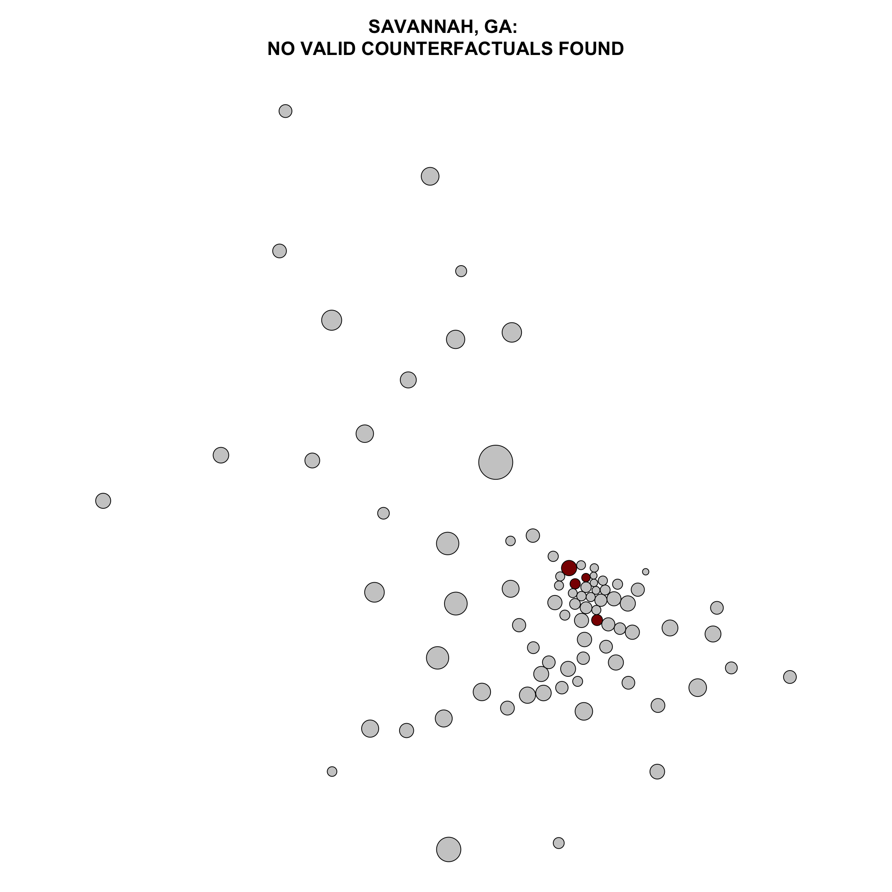
## <br><br><hr><br><br><center><h2>SCRANTON--WILKES-BARRE, PA</h2></center>fo <- as.formula( "treatment ~ hinc12 + pcol12 + pnhwht12" )
cbsa.code.list <- unique( dorlings.catalog$cbsa )
for( i in cbsa.code.list [295:349] )
{
get_matches( cbsa.code=i,
cbsa.catalog=dorlings.catalog,
df.treatment=df.treatment,
fo=fo )
}## <br><br><hr><br><br><center><h2>SHERMAN-DENISON, TX</h2></center><br><br><hr><br><br><center><h2>There are no treated tracts in SHERMAN-DENISON, TX.</h2></center><br><br><hr><br><br><br><br><hr><br><br><center><h2>SHREVEPORT-BOSSIER CITY, LA</h2></center><br><br><hr><br><br><center><h2>There are no treated tracts in SHREVEPORT-BOSSIER CITY, LA.</h2></center><br><br><hr><br><br><br><br><hr><br><br><center><h2>SIOUX CITY, IA-NE-SD</h2></center>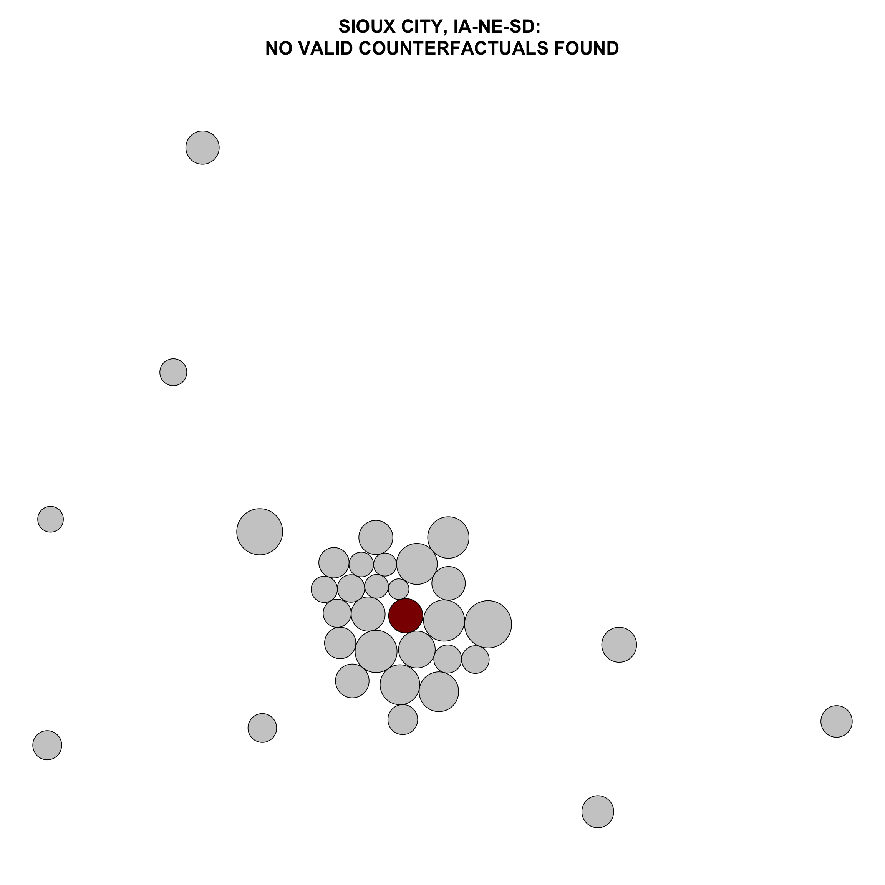
## <br><br><hr><br><br><center><h2>SIOUX FALLS, SD</h2></center><br><br><hr><br><br><center><h2>There are no treated tracts in SIOUX FALLS, SD.</h2></center><br><br><hr><br><br><br><br><hr><br><br><center><h2>SOUTH BEND-MISHAWAKA, IN-MI</h2></center>
## -----------------------------------
## Control Treated
## --------------- --------- ---------
## **All** 79 7
##
## **Matched** 4 4
##
## **Unmatched** 14 2
##
## **Discarded** 61 1
## -----------------------------------## <br><br><hr><br><br><center><h2>SPARTANBURG, SC</h2></center>## <br><br><hr><br><br><center><h2>SPRINGFIELD, IL</h2></center>## <br><br><hr><br><br><center><h2>SPRINGFIELD, MA</h2></center>
## -----------------------------------
## Control Treated
## --------------- --------- ---------
## **All** 148 9
##
## **Matched** 3 3
##
## **Unmatched** 52 6
##
## **Discarded** 93 0
## -----------------------------------## <br><br><hr><br><br><center><h2>SPRINGFIELD, MO</h2></center>## <br><br><hr><br><br><center><h2>SPRINGFIELD, OH</h2></center>## <br><br><hr><br><br><center><h2>ST. CLOUD, MN</h2></center><br><br><hr><br><br><center><h2>There are no treated tracts in ST. CLOUD, MN.</h2></center><br><br><hr><br><br><br><br><hr><br><br><center><h2>ST. GEORGE, UT</h2></center>
## <br><br><hr><br><br><center><h2>ST. JOSEPH, MO-KS</h2></center>## <br><br><hr><br><br><center><h2>ST. LOUIS, MO-IL</h2></center>
## -----------------------------------
## Control Treated
## --------------- --------- ---------
## **All** 526 100
##
## **Matched** 57 57
##
## **Unmatched** 208 40
##
## **Discarded** 261 3
## -----------------------------------## <br><br><hr><br><br><center><h2>STATE COLLEGE, PA</h2></center><br><br><hr><br><br><center><h2>There are no treated tracts in STATE COLLEGE, PA.</h2></center><br><br><hr><br><br><br><br><hr><br><br><center><h2>STOCKTON, CA</h2></center><br><br><hr><br><br><center><h2>There are no treated tracts in STOCKTON, CA.</h2></center><br><br><hr><br><br><br><br><hr><br><br><center><h2>SUMTER, SC</h2></center>## <br><br><hr><br><br><center><h2>SYRACUSE, NY</h2></center>## <br><br><hr><br><br><center><h2>TALLAHASSEE, FL</h2></center>
## <br><br><hr><br><br><center><h2>TAMPA-ST. PETERSBURG-CLEARWATER, FL</h2></center>
## -----------------------------------
## Control Treated
## --------------- --------- ---------
## **All** 717 18
##
## **Matched** 11 11
##
## **Unmatched** 673 7
##
## **Discarded** 33 0
## -----------------------------------## <br><br><hr><br><br><center><h2>TERRE HAUTE, IN</h2></center>## <br><br><hr><br><br><center><h2>TEXARKANA, TX-TEXARKANA, AR</h2></center><br><br><hr><br><br><center><h2>There are no treated tracts in TEXARKANA, TX-TEXARKANA, AR.</h2></center><br><br><hr><br><br><br><br><hr><br><br><center><h2>TOLEDO, OH</h2></center>## <br><br><hr><br><br><center><h2>TOPEKA, KS</h2></center>## <br><br><hr><br><br><center><h2>TRENTON-EWING, NJ</h2></center>## <br><br><hr><br><br><center><h2>TUCSON, AZ</h2></center>## <br><br><hr><br><br><center><h2>TULSA, OK</h2></center>## <br><br><hr><br><br><center><h2>TUSCALOOSA, AL</h2></center>## <br><br><hr><br><br><center><h2>TYLER, TX</h2></center><br><br><hr><br><br><center><h2>There are no treated tracts in TYLER, TX.</h2></center><br><br><hr><br><br><br><br><hr><br><br><center><h2>U A-ROME, NY</h2></center><br><br><hr><br><br><center><h2>There are no treated tracts in U A-ROME, NY.</h2></center><br><br><hr><br><br><br><br><hr><br><br><center><h2>VALDOSTA, GA</h2></center>## <br><br><hr><br><br><center><h2>VALLEJO-FAIRFIELD, CA</h2></center><br><br><hr><br><br><center><h2>There are no treated tracts in VALLEJO-FAIRFIELD, CA.</h2></center><br><br><hr><br><br><br><br><hr><br><br><center><h2>VERO BEACH, FL</h2></center>## <br><br><hr><br><br><center><h2>VICTORIA, TX</h2></center><br><br><hr><br><br><center><h2>There are no treated tracts in VICTORIA, TX.</h2></center><br><br><hr><br><br><br><br><hr><br><br><center><h2>VINELAND-MILLVILLE-BRIDGETON, NJ AT</h2></center>## <br><br><hr><br><br><center><h2>VIRGINIA BEACH-NORFOLK-NEWPORT NEWS, VA</h2></center>## <br><br><hr><br><br><center><h2>VISALIA-PORTERVILLE, CA</h2></center><br><br><hr><br><br><center><h2>There are no treated tracts in VISALIA-PORTERVILLE, CA.</h2></center><br><br><hr><br><br><br><br><hr><br><br><center><h2>WACO, TX</h2></center><br><br><hr><br><br><center><h2>There are no treated tracts in WACO, TX.</h2></center><br><br><hr><br><br><br><br><hr><br><br><center><h2>WARNER ROBINS, GA</h2></center><br><br><hr><br><br><center><h2>There are no treated tracts in WARNER ROBINS, GA.</h2></center><br><br><hr><br><br><br><br><hr><br><br><center><h2>WARREN-FARMINGTON-HILLS-TROY, MI</h2></center>## <br><br><hr><br><br><center><h2>WASHINGTON-ARLINGTON-ALEXANDRIA DC-VA</h2></center>
## -----------------------------------
## Control Treated
## --------------- --------- ---------
## **All** 1033 34
##
## **Matched** 28 28
##
## **Unmatched** 516 5
##
## **Discarded** 489 1
## -----------------------------------## <br><br><hr><br><br><center><h2>WATERLOO-CEDAR FALLS, IA</h2></center>
## <br><br><hr><br><br><center><h2>WEIRTON-STEUBENVILLE, WV-OH</h2></center><br><br><hr><br><br><center><h2>There are no treated tracts in WEIRTON-STEUBENVILLE, WV-OH.</h2></center><br><br><hr><br><br><br><br><hr><br><br><center><h2>WEST PALM BEACH-BOCA RATON-BOYNTON FL</h2></center>## <br><br><hr><br><br><center><h2>WHEELING, WV-OH</h2></center>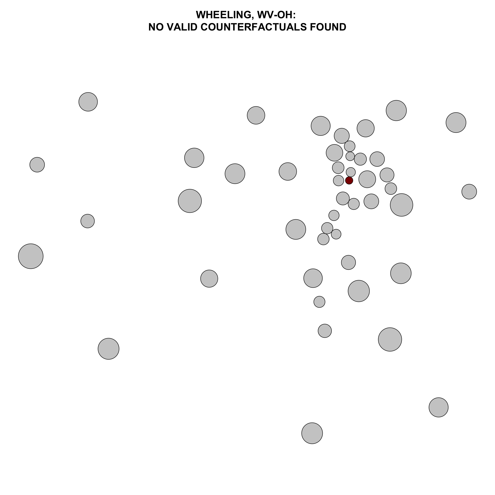
## <br><br><hr><br><br><center><h2>WICHITA FALLS, TX</h2></center><br><br><hr><br><br><center><h2>There are no treated tracts in WICHITA FALLS, TX.</h2></center><br><br><hr><br><br><br><br><hr><br><br><center><h2>WICHITA, KS</h2></center>## <br><br><hr><br><br><center><h2>WILLIAMSPORT, PA</h2></center>
## <br><br><hr><br><br><center><h2>WILMINGTON, DE-MD-NJ</h2></center>## <br><br><hr><br><br><center><h2>WILMINGTON, NC</h2></center>## <br><br><hr><br><br><center><h2>WINSTON-SALEM, NC</h2></center>## <br><br><hr><br><br><center><h2>WORCESTER, MA</h2></center>
## -----------------------------------
## Control Treated
## --------------- --------- ---------
## **All** 163 9
##
## **Matched** 3 3
##
## **Unmatched** 79 6
##
## **Discarded** 81 0
## -----------------------------------## <br><br><hr><br><br><center><h2>YORK-HANOVER, PA</h2></center>## <br><br><hr><br><br><center><h2>YOUNGSTOWN-WARREN-BOARDMAN, OH-PA</h2></center>## <br><br><hr><br><br><center><h2>YUBA CITY, CA</h2></center><br><br><hr><br><br><center><h2>There are no treated tracts in YUBA CITY, CA.</h2></center><br><br><hr><br><br>